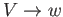
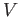
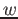

Son gramáticas cuyas reglas de derivación no dependen de un contexto. Esta son de la
forma
 donde es  es un sÃmbolo no terminal y  es una cadena de terminales y no terminales.
Las gramáticas libres de contexto originan lenguajes libres de contexto que pueden ser implementados mediante
autómatas de pilas.
franj
2015-11-21